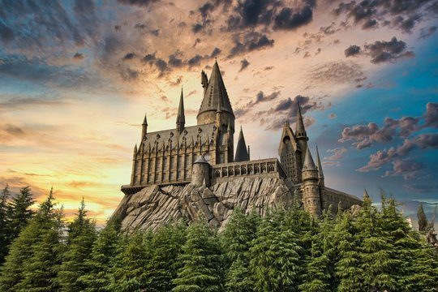
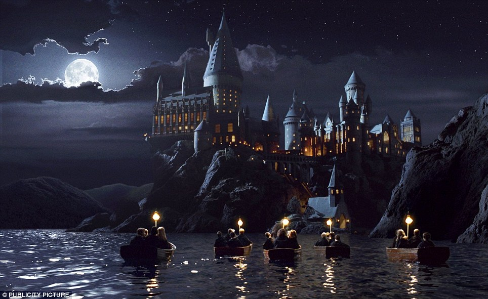
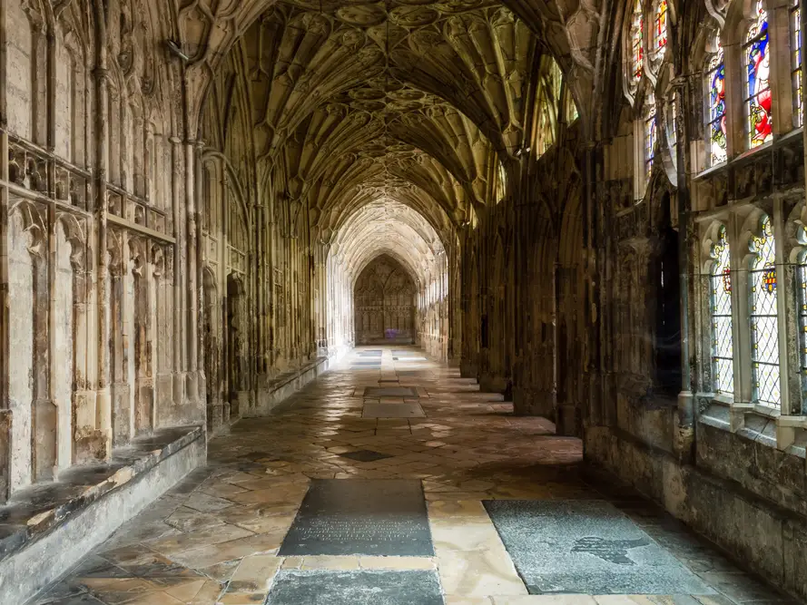
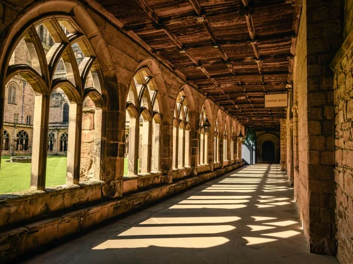
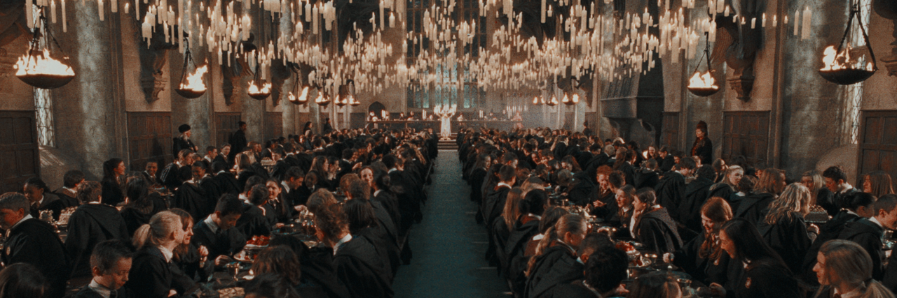
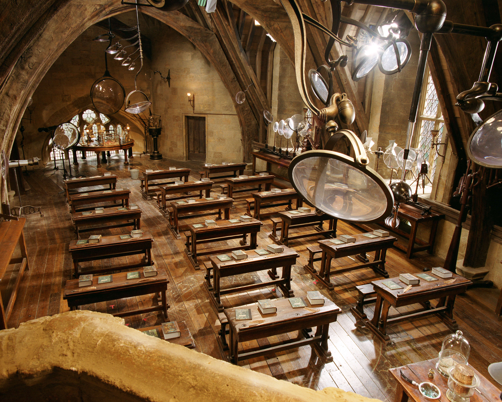
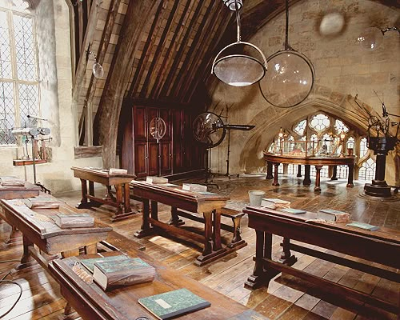
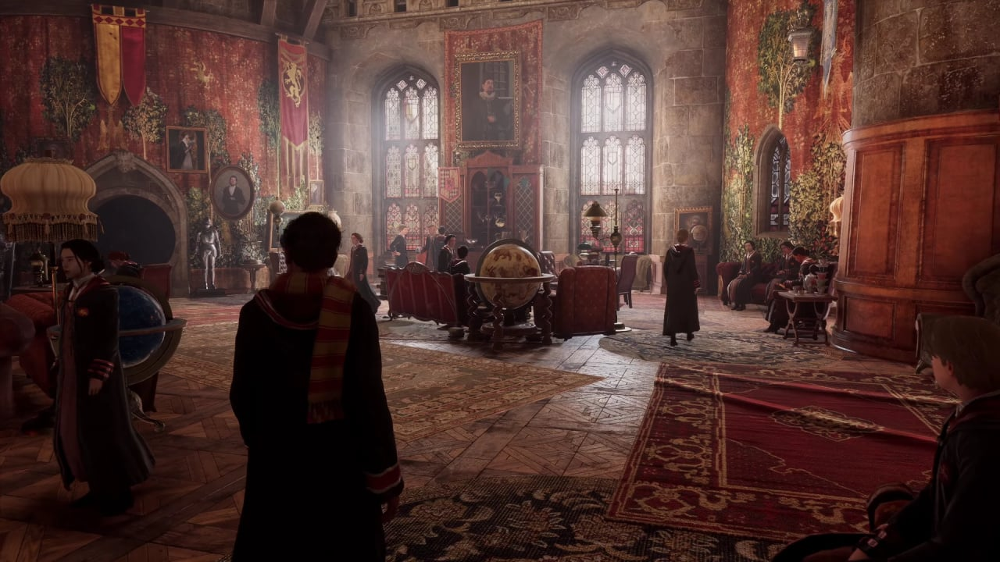
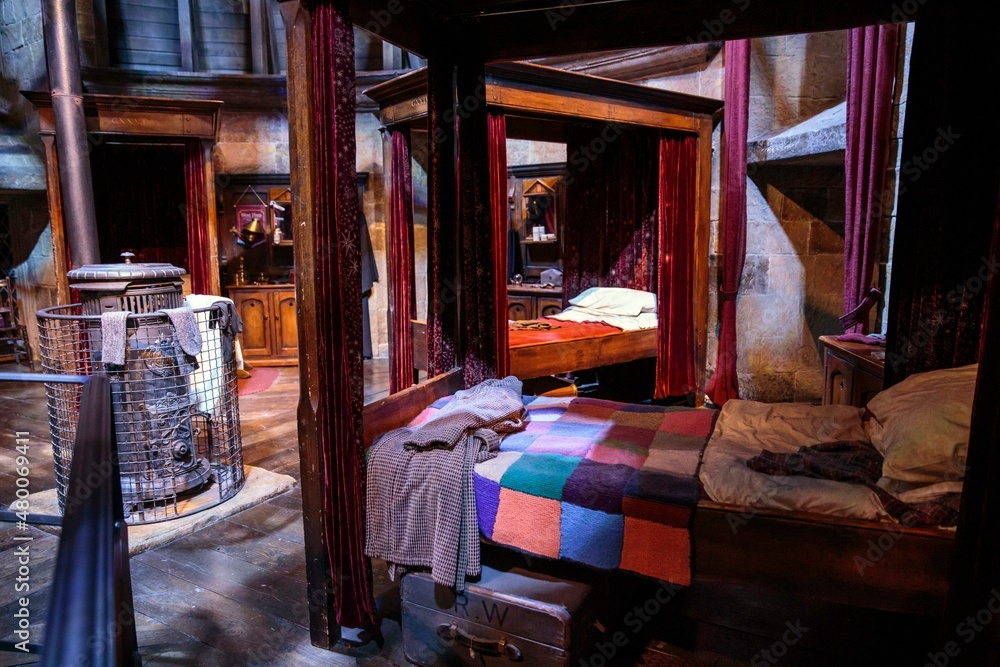

Nuestro centro
Exteriores
Nuetsro castillo tiene mas de 1000 años de antiguedad, pero se encuentra perfectamente conservado, y disponemos de amplios terrenos para poder realizar actividades y estudios al aire libre.



Áreas comunes
El gran comedor es el centro de Hogwarts, ahí se realizan todas las comidas, fiestas y eventos. Además el castillo tiene varias escaleras para facilitar el desplazamiento y amplios pasillos para evitar atascos de camino a clase. Nuestra biblioteca cuenta con miles de tomos de todos los temas existentes. También disponemos de enfermería para cualquier incidente que pueda ocurrir.



Aulas
Nuestras aulas son de lo más diversas. Desde una clase de pociones en las mazmorras hasta un aula de astronomía en la torre más alta del castllo. Tenemos también invernadero para las clases de herbología y aulas con protecciones para defensa contra las clases oscuras.


Áreas de descanso
Todos los alumnos convivirán en habitaciones compartidas, siendo a partir de los 11 años cuando se dividirán por casas. Estas disponen de salas comunes privadas donde estudiar, charlar o simplemente descansar entre clases o al final del día.


